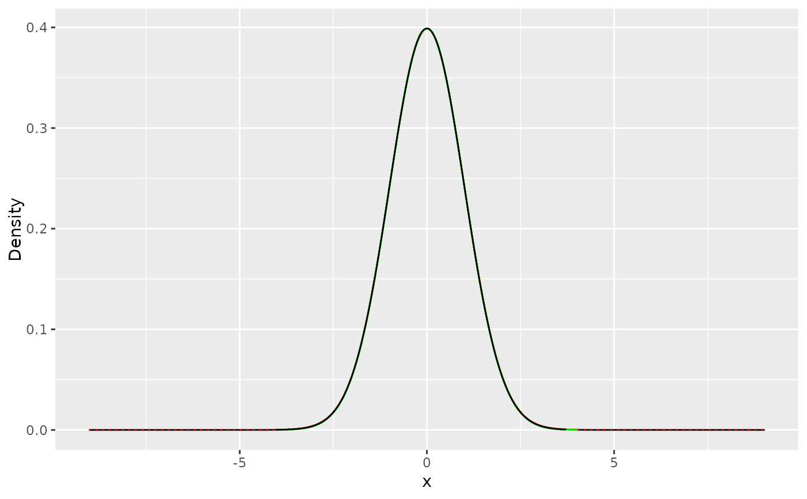
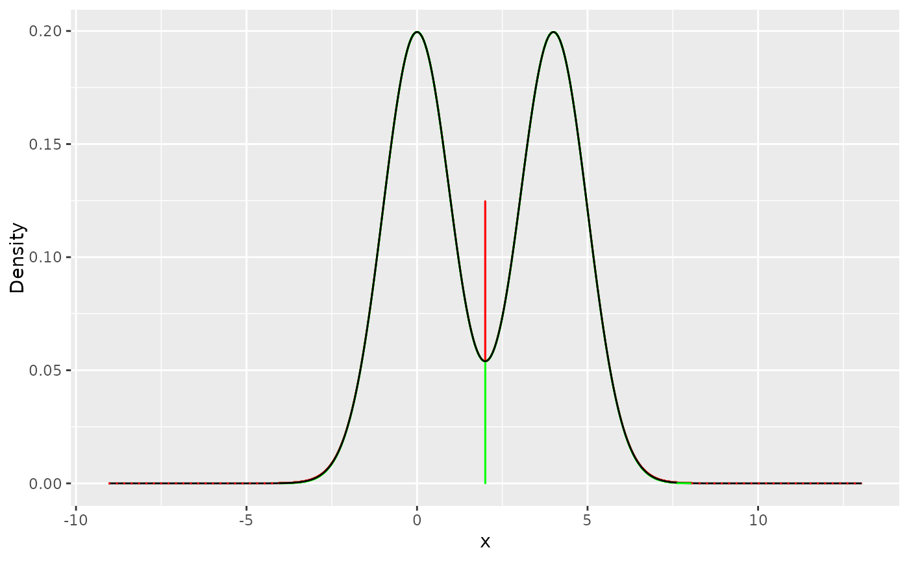

Build Proposal
build_proposal.RdConstructs the step optimized proposal density, squeezing function, and log-linear tail proposal for a user defined probability density function.
Usage
build_proposal(
f,
modes,
lower = -Inf,
upper = Inf,
h = NULL,
h_prime = NULL,
steps = NULL,
proposal_range = NULL,
theta = 0.1,
target_sample_size = 1000,
verbose = FALSE,
...
)Arguments
- f
A function which returns the (unnormalised) probability density function of the target distribution. The first argument must be the value at which the pdf is to be evaluated. Additional arguments may be parameters of the distribution, which should be specified by name in the
...arguments.- modes
Numeric vector of modes of the density function.
- lower
Numeric scalar representing the lower bound of the target density. Default is
-Inffor unbounded lower support.- upper
Numeric scalar representing the upper bound of the target density. Default is
Inffor unbounded upper support.- h
An optional function which returns the (unnormalised) log-probability density function of the target distribution. As for
fthe first argument must be the value at which the log-pdf is to be evaluated and additional parameters may be named arguments passed to....- h_prime
An optional function which returns the first derivative of the (unnormalised) log-probability density function of the target distribution. As for
fthe first argument must be the value at which the log-pdf is to be evaluated and additional parameters may be named arguments passed to....- steps
Optional integer scalar specifying the number of steps in the step optimised part of the proposal density and squeezing function.
- proposal_range
Optional numeric vector of length 2 specifying the lower and upper range of the steps in the step optimised part of the proposal density and squeezing function. This range should be contained within the interval defined by
lowerandupper.- theta
Optional numeric scalar (between 0.1 and 1) defining the pre-acceptance threshold. This dictates when no further steps should be added in the step optimised part of the proposal density and squeezing function, based on the probability of pre-acceptance.
- target_sample_size
Integer scalar indicating the typical sample size that will be requested when sampling from this density using build_sampler. The proposal optimization process bases benchmark timings on this target size in order to select a proposal best suited to the desired sample size. Note this does not limit sampling to this number, it is merely a guide should the user be aware that a certain sample size will be most commonly sampled.
- verbose
Logical scalar. If
TRUE, a table detailing the optimization areas and steps will be displayed during proposal optimization. Defaults toFALSE.- ...
Further arguments to be passed to
f,h, andh_prime, if they depend on additional parameters.
Value
This returns a list which is used to construct the sampler by passing to build_sampler function.
A list containing the optimized proposal and related parameters for the specified built-in distribution:
dataA data frame with detailed information about the proposal steps, including:
xThe start point of each step on the x-axis.
s_upperThe height of each step on the y-axis.
p_aPre-acceptance probability for each step.
s_upper_lowerA vector used to scale the uniform random number when the sample is accepted.
areasA numeric vector containing the areas under:
left_tailThe left tail bound.
stepsThe middle steps.
right_tailThe right tail bound.
steps_numberAn integer specifying the number of steps in the proposal.
sampling_probabilitiesA numeric vector with:
left_tailThe probability of sampling from the left tail.
left_and_middleThe combined probability of sampling from the left tail and middle steps.
unif_scalerA numeric scalar, the inverse probability of sampling from the steps part of the proposal (\(\frac{1}{p(lower < x < upper)}\)). Used for scaling uniform random values.
lt_propertiesA numeric vector of 5 values required for Adaptive Rejection Sampling (ARS) in the left tail.
rt_propertiesA numeric vector of 6 values required for ARS in the right tail.
alphaA numeric scalar representing the uniform step area.
tails_methodA string, either
"ARS"(Adaptive Rejection Sampling) or"IT"(Inverse Transform), indicating the sampling method for the tails.proposal_boundsA numeric vector specifying the left and right bounds of the target density.
cnumAn integer representing the cache number of the created proposal in memory.
symmetricA numeric scalar indicating the symmetry point of the proposal, or
NULLif not symmetric.f_paramsA list of parameters for the target density that the proposal is designed for.
is_symmetricA logical value indicating whether the proposal is symmetric.
proposal_typeA string indicating the type of the generated proposal:
"scaled"The proposal is "scalable" and standardized with
rate = 1. This is used when parameterrateis eitherNULLor not provided. Scalable proposals are compatible withsrexp."custom"The proposal is "custom" when
rateis provided. Custom proposals are compatible withsrexp_custom.
target_function_areaA numeric scalar estimating the area of the target distribution.
dens_funcA string containing the hardcoded density function.
density_nameA string specifying the name of the target density distribution.
lockAn identifier used for saving and loading the proposal from disk.
Details
This function is the starting point when a user wishes to build a custom sampler using StORS. It is responsible for generating the step optimized proposal density, squeezing function, and log-linear tail proposal that can be utilized for this purpose. The minimum information that must be supplied by the user is:
The (closed) interval of support for the distribution, [
lower,upper] \(\in \mathbb{R}\), which may also be half-closed on either side, or all of \(\mathbb{R}\).The probability density function (pdf), which need not be normalised,
f.Any modes of the pdf, as vector
modes.
Optionally, the log-pdf and derivative of the log-pdf may be supplied.
Arguments for pdf
The pdf (and log-pdf and first derivative of the log-pdf) may depend on certain parameters.
If so, these can be from the second argument onward in f.
For instance, consider the Kumaraswamy distribution, which has pdf:
$$f(x; a,b) = a b x^{a-1}{ (1-x^a)}^{b-1}, \ \ \mbox{where} \ \ x \in (0,1)$$
This pdf has known modes.
Then, to implement as a custom StORS sampler, we would first define the pdf in R:
dkumaraswamy <- function(x, a, b) a*b*(x^(a-1))*(1-x^a)^(b-1)
Then, to construct a StORS proposal for \(a=2\) and \(b=2\), we would call
Proposal <- build_Proposal(lower = 0, upper = 1, modes = sqrt(1/3), f = dkumaraswamy, a = 2, b = 2)
StORS proposal construction
StORS defines an unnormalised piecewise constant proposal density and squeezing function, with a Proposal defining the change points. To optimise the execution speed on modern CPUs, the unnormalised piecewise constant proposal has fixed area for each segment with one end of the segment coinciding with the user's pdf. That is, each step of the function has width defined by \(w_i = (x_i - x_{i-1})\) and a height determined by \(h_i = \max(f(x_{i-1}), f(x_i))\), such that \(w_i h_i = \alpha \ \forall\,i\) where \(\alpha\) is constant.
Once the user has constructed the proposal, the sampling function can be built using build_sampler().
Internal details
The function build_final_Proposal() manages the construction of these steps and calculates values critical for the sampling process.
When the resultant Proposal is used with the build_sampler() function, these values are cached,
significantly enhancing the computational efficiency and hence improving sampling speed.
During the optimization process, we aim for a certain Proposal
size based on L1-3 memory cache size. Therefore, we test the speed of Proposals of sizes \(2^m\) Kb.
To achieve this, we estimate the uniform step area
based on a certain steps number that leads to the target cache size,
\( \alpha = \frac{1}{\text{number of steps}} \).
The speed testing for each possible Proposal is initially based on a sample size of 1000.
However, if the user wishes to optimize the Proposal for a different sample size, they can do so
by specifying the desired sample size using the target_sample_size argument.
In case the user wants to select a specific number of steps for the proposal
and bypass the optimization process, this can be done by specifying a steps number greater than the number of modes by 2 using the steps argument.
If the target density is heavy-tailed,
and the user wishes to stop the Proposal building process at a certain pre-acceptance threshold, this can be achieved by setting
the acceptance probability threshold theta \(\theta\).
Once the steps reach this level of pre-acceptance probability,
the step construction will end \( \frac{\min(f(x_i), f(x_{i+1}))}{\max(f(x_i), f(x_{i+1}))} < \theta \).
Alternatively, if the user wishes to create the steps within certain limits on the
x-axis, they can do so by specifying the proposal limits using the proposal_range argument.
See also
build_sampler: Function to build and return a sampling function based on the provided proposal properties.
Examples
# Example 1: Building a proposal for Standard Normal Distribution
# This example demonstrates constructing a proposal for a standard normal distribution
# \( f(x) \sim \mathcal{N}(0,1) \),
# and shows the optimization table by setting \code{verbose} to \code{TRUE}.
# Define the density function, its logarithm,
# and its derivative for the standard normal distribution
modes_norm = 0
f_norm <- function(x) { 1 / sqrt(2 * pi) * exp(-0.5 * x^2) }
h_norm <- function(x) { log(f_norm(x)) }
h_prime_norm <- function(x) { -x }
# Build the proposal for the standard normal distribution
norm_proposal = build_proposal(lower = -Inf, upper = Inf, mode = modes_norm,
f = f_norm, h = h_norm, h_prime = h_prime_norm, verbose = TRUE)
#>
#> ── Optimization Summary ────────────────────────────────────────────────────────
#>
#>
#> Step: Inf | Area: 0.008130081
#> -----------------------------------------------
#> Steps | Area | Best Sim Time
#> -----------------------------------------------
#> --- 132 --- --- 0.007723577 --- --- 98003.00 ---
#> --- 126 --- --- 0.008130081 --- --- 120564.50 ---
#> --- 120 --- --- 0.008536585 --- --- 113201.50 ---
#>
#>
#> Step: Inf | Area: 0.003984064
#> -----------------------------------------------
#> Steps | Area | Best Sim Time
#> -----------------------------------------------
#> --- 268 --- --- 0.003784861 --- --- 65256.50 ---
#> --- 254 --- --- 0.003984064 --- --- 57321.50 ---
#> --- 242 --- --- 0.004183267 --- --- 72069.50 ---
#>
#>
#> Step: Inf | Area: 0.001972387
#> -----------------------------------------------
#> Steps | Area | Best Sim Time
#> -----------------------------------------------
#> --- 538 --- --- 0.001873767 --- --- 38377.00 ---
#> --- 512 --- --- 0.001972387 --- --- 45831.00 ---
#> --- 488 --- --- 0.002071006 --- --- 53194.50 ---
#>
#>
#> Step: Inf | Area: 0.000981354
#> -----------------------------------------------
#> Steps | Area | Best Sim Time
#> -----------------------------------------------
#> --- 1078 --- --- 0.000932287 --- --- 34139.00 ---
#> --- 1024 --- --- 0.000981354 --- --- 28418.00 ---
#> --- 976 --- --- 0.001030422 --- --- 34424.00 ---
#>
#>
#> Step: Inf | Area: 0.000489476
#> -----------------------------------------------
#> Steps | Area | Best Sim Time
#> -----------------------------------------------
#> --- 2156 --- --- 0.000465002 --- --- 21290.00 ---
#> --- 2048 --- --- 0.000489476 --- --- 18705.00 ---
#> --- 1952 --- --- 0.000513950 --- --- 25858.00 ---
#>
#>
#> Step: Inf | Area: 0.000244439
#> -----------------------------------------------
#> Steps | Area | Best Sim Time
#> -----------------------------------------------
#> --- 4312 --- --- 0.000232217 --- --- 17667.50 ---
#> --- 4098 --- --- 0.000244439 --- --- 18479.50 ---
#> --- 3902 --- --- 0.000256661 --- --- 15544.00 ---
#>
#>
#> Step: Inf | Area: 0.000122145
#> -----------------------------------------------
#> Steps | Area | Best Sim Time
#> -----------------------------------------------
#> --- 8626 --- --- 0.000116038 --- --- 17859.00 ---
#> --- 8194 --- --- 0.000122145 --- --- 13901.00 ---
#> --- 7804 --- --- 0.000128252 --- --- 18650.00 ---
#>
#>
#> Step: Inf | Area: 0.000061054
#> -----------------------------------------------
#> Steps | Area | Best Sim Time
#> -----------------------------------------------
#> --- 17248 --- --- 0.000058001 --- --- 25467.50 ---
#> --- 16386 --- --- 0.000061054 --- --- 24259.50 ---
#> --- 15606 --- --- 0.000064106 --- --- 20273.00 ---
#>
#> ────────────────────────────────────────────────────────────────────────────────
#>
#> ── Performance Data: ───────────────────────────────────────────────────────────
#> Area | Time | Steps
#> -----------------------------------------
#> 0.0077235772 | 98003.00 | 132
#> 0.0039840637 | 57321.50 | 254
#> 0.0018737673 | 38377.00 | 538
#> 0.0009813543 | 28418.00 | 1024
#> 0.0004894763 | 18705.00 | 2048
#> 0.0002566610 | 15544.00 | 3902
#> 0.0001221449 | 13901.00 | 8194
#> ────────────────────────────────────────────────────────────────────────────────
# Plot the generated proposal
plot(norm_proposal)

# Example 2: proposal for a Bimodal Distribution
# This example shows how to build a proposal for sampling from a bimodal distribution,
#combining two normal distributions
# \( f(x) = 0.5 \cdot w_1(x) + 0.5 \cdot w_2(x) \),
# where \( w_1(x) \sim \mathcal{N}(0, 1) \) and \( w_2(x) \sim \mathcal{N}(4, 1) \).
# Define the bimodal density function
f_bimodal <- function(x) {
0.5 * (1 / sqrt(2 * pi)) * exp(-(x^2) / 2) + 0.5 * (1 / sqrt(2 * pi)) * exp(-((x - 4)^2) / 2)
}
modes_bimodal = c(0.00134865, 3.99865)
# Build the proposal for the bimodal distribution
bimodal_proposal = build_proposal( f = f_bimodal, lower = -Inf, upper = Inf, mode = modes_bimodal)
# Print and plot the bimodal proposal
print(bimodal_proposal)
#>
#> ── Proposal Summary ────────────────────────────────────────────────────────────
#> • Total steps: 7,806
#> • Steps range: [-4.044247, 8.042763]
#> • Sampling efficiency: 99.88%
plot(bimodal_proposal)

# Example 3: Proposal with 500 Steps for Bimodal Distribution
# This example demonstrates constructing a proposal with 500 steps,
# for the bimodal distribution used in Example 2.
bimodal_proposal_500 = build_proposal(f = f_bimodal, lower = -Inf, upper = Inf,
mode = modes_bimodal, steps = 500)
# Print and plot the proposal with 500 steps
print(bimodal_proposal_500)
#>
#> ── Proposal Summary ────────────────────────────────────────────────────────────
#> • Total steps: 500
#> • Steps range: [-2.332842, 6.332824]
#> • Sampling efficiency: 98.89%